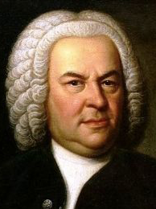

Throughout the 18th century Bach was primarily valued as an organist, while his keyboard music, such as The Well-Tempered Clavier, was appreciated for its didactic qualities. The 19th century saw the publication of some major Bach biographies, and by the end of that century all of his known music had been printed. His music was further popularised through a multitude of arrangements, including for instance the Air on the G String, and of recordings, for instance three different box sets with complete performances of the composer's oeuvre marking the 250th anniversary of his death.